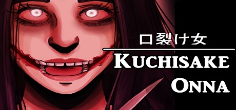

On raconte que la femme à la bouche fendue erre comme une âme en peine dans les campagnes une fois la nuit tombée.
L'esprit vengeur serait vêtu de vêtements longs et sombres avec son sourire caché derrière un masque chirurgical.
Armée d'une paire de ciseaux, quand elle rencontre un enfant, elle lui demande : "Suis-je belle ?" si l'enfant répond oui, elle retire alors son masque et lui montre sa bouche lacérée.
La femme lui demande à nouveau : "Même comme ça ?". Si l'enfant répond "non", elle le tue immédiatement. Au contraire, s'il répond "oui", alors Kuchisake-onna le raccompagne chez lui et le tue devant la porte de sa maison.
Il existe d'autres versions de la légende dans lesquelles la jeune femme s'attaque plutôt aux hommes ou bien la solution pour échapper à sa vengeance est de lui répondre qu'elle n'est ni belle ni laide ou de lui retourner ses questions ce qui la fera fuir.
La légende originale comprenait une jeune femme vivant il y a une centaine d'années (certaines versions de cette légende situent l'histoire à l'ère d'Edo) et ayant été la femme, ou bien la concubine d'un samouraï. Elle était décrite comme étant d'une grande beauté mais aussi très vaniteuse, et probablement infidèle à son époux. Le samouraï, extrêmement jaloux et se sentant trompé et déshonoré, l'attaqua et lui fendit la bouche jusqu'aux deux oreilles, criant : « Qui te trouvera belle, désormais ? ».
| Physique |
|---|
| Cheveux noir |
| Masque chirugical |
| Habit sombre |